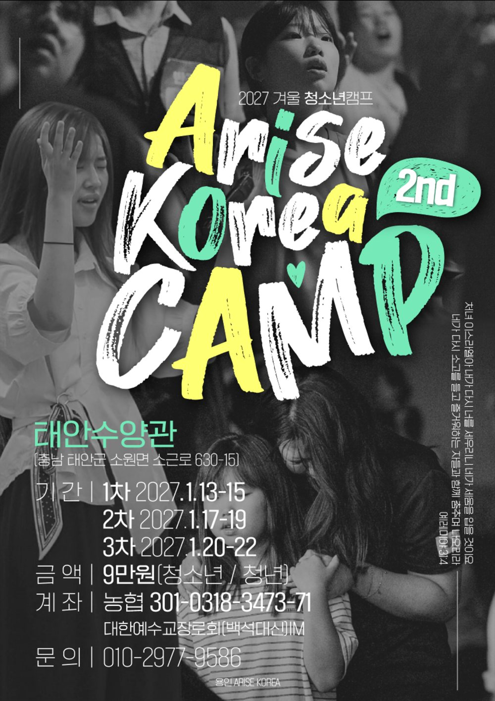

AKC 슬로건 말씀후에 그들에게 이르기를 우리가 당한 곤경은 너희도 보고 있는 바라 예루살렘이 황폐하고 성문이 불탔으니 자, 예루살렘 성을 건축하여 다시 수치를 당하지 말자 하고
— 느헤미야 2:17
AKC의 세 가지 방향성
무너진 성벽 앞에서 함께 일어난 사람들처럼, AKC는 다음 세대를 세 가지 방향으로 세웁니다.
킹덤 프로듀서
하나님 나라를 만들어가는 사람. 전공도, 직업도, 재능도 그대로 그 자리가 됩니다.
킹덤 빌더
하나님 나라를 세워가는 사람. 나 자신에서 시작해 가정과 공동체, 그리고 지역으로 이어집니다.
킹덤 어라이저
하나님 나라를 일으키는 사람. 혼자 서는 것으로 끝나지 않고, 함께 일어나 다른 사람을 일으킵니다.

준비 중
REBUILD
무너진 땅에, 새로운 세대를
REBUILD는 위기에서 시작해 한 사람을 다시 세우고, 세워진 사람을 각자의 영역으로 보내어 이 땅을 일으키는 흐름입니다.
5~7차 주제 말씀처녀 이스라엘아 내가 다시 너를 세우리니 네가 세움을 입을 것이요
— 예레미야 31:4
네가 다시 소고를 들고 즐거워하는 자들과 함께 춤추며 나오리라
- 01
위기
비판과 우울, 미디어 중독이 깊어지는 포스트모던 사회. 선교하던 교회가 사역을 거쳐 생존을 고민하게 된 자리. 그리고 비어가는 다음세대의 자리입니다.
- 02
REBUILD — 다시 세움
무너진 그 자리에서 다시 세웁니다. 말씀과 예배, 체험형 프로그램과 깊은 나눔 안에서 한 사람의 방향을 새롭게 잡습니다.
- 03
각 영역에 사람을 세움
세워진 사람을 각자의 영역으로 보냅니다. 사회 · 의약 · 교육 · 자연공학 · 예체능 — 전공과 직업이 그대로 한 영역을 맡는 자리가 됩니다.
- 04
한국을 일으킴
각 영역에 세워진 사람들을 통해 다음세대와 지역교회, 청년세대가 함께 일어납니다.
2027 겨울 5~7차 캠프
이번 5~7차 캠프는 청소년과 청년이 함께 진행합니다. 세 차수 모두 같은 내용이니 원하는 날짜를 선택해 신청하세요.
| 장소 | 태안 수양원 · AKC 자체 운영 시설 (충남 태안군 소원면 소근로 630-15) |
|---|---|
| 대상 | 중학생부터 대학생 · 직장인 청년까지 (교회 출석 여부와 관계없이 누구나) |
| 모집 인원 | 차수별 최대 250명 |
| 참가비 | 90,000원 (청소년 · 청년 동일) |
| 신청 기간 | 2026. 9. 18(금) 오전 8시 ~ 12. 28(월) |
| 주최 | 전국의 지역교회 및 공동체 연합 |
| 문의 | 010-2977-9586 · AriseKoreaCamp@gmail.com |
AKC가 여는 캠프
이번 겨울 5~7차 캠프는 영성 캠프로 진행됩니다.
참가자들의 진짜 이야기
지난 캠프에 함께한 참가자들이 남긴 이야기입니다.
캠프에서 가장 기억에 남는 시간은 강사님들의 간증과 설교 시간이었습니다. 평소 저의 롤모델이기도 한 강사님들의 말씀을 오랜만에 가까이서 듣게 되었는데, 그 말씀 하나하나가 마음 깊이 와닿았습니다. 말씀을 들으며 제 안에 있던 죄성을 돌아보게 되었고, 미처 알지 못했던 것들을 새롭게 배우는 귀한 시간이었습니다.
이번 캠프를 통해 이제는 정말 정신을 차리고, 하나님의 마음에 합한 자로 살아가고 싶다는 결단을 하게 되었습니다. 앞으로는 한국에 부흥을 일으키는 리더로 쓰임받는 삶을 살아가기를 소망합니다.
저에게는 캠프 둘째 날 있었던 집회와 은혜 나눔 시간이 가장 기억에 남습니다. 그 시간을 통해 하나님의 말씀에 순종하는 리더로 살아가겠다고 다짐할 수 있었습니다. 또한 나 자신만을 위해 기도하는 것에 머물지 않고, 자리를 옮겨 다니며 서로를 위해 기도하고 축복해줄 수 있어서 참 좋았습니다.
그 시간 하나님께서는 저에게 나의 생각이 아닌 하나님의 생각을, 나의 계획이 아닌 하나님의 계획을 따라가라는 마음을 주셨습니다. 앞으로는 하나님의 말씀 앞에 순종하는 리더, 주님 앞에 겸손히 무릎 꿇는 리더로 살아가고 싶습니다. 나의 계획이 아닌 주님의 계획대로 살아가는 자가 되기를 다짐합니다.
저는 캠프 첫째 날 강사님의 간증 시간이 가장 기억에 남습니다. 재미있으면서도 마음 깊이 감동이 있는 시간이었기 때문입니다. 더운 여름, 시원하게 물놀이를 했던 시간도 즐거운 추억으로 남았습니다.
이번 캠프에서 저는 팀 리더를 맡게 되었는데, 그 역할을 감당하며 많은 생각을 하게 되었고 저 자신을 돌아보는 소중한 시간이 되었습니다. 캠프 안에서만 은혜를 누리는 것이 아니라, 캠프를 마친 이후에도 매일매일 하나님을 경외하며 한 걸음 한 걸음 하나님께 더 가까이 나아가는 삶을 살아가겠습니다.
이번 캠프를 통해 참 많은 것을 느끼고 깨달았습니다. 저녁 집회 시간, 선교사님들과 강사님들의 설교와 간증을 들으며 다들 저마다의 아픔이 있었다는 것을 알게 되었습니다. 그 아픔을 혼자서 해결해보려 애썼지만, 결국에는 그 모든 것을 하나님께 온전히 내려놓으신 그분들의 모습을 보며 어떻게 저렇게 하나님 앞에 나아갈 수 있을까라는 생각이 많이 들었습니다.
저에게도 아직 해결하지 못한 아픔이 있습니다. 하지만 이제는 그것을 저 혼자만의 힘으로 해결하려 하기보다, 하나님 앞에 제 죄성과 아픔을 솔직히 인정하고 하나님께 힘을 구하며 나아가야겠다는 다짐을 하게 된 소중한 시간이었습니다. 앞으로 리더로서 힘들어하는 이들을 만날 때, 먼저 다가가 손을 내밀어줄 수 있는 사람이 되기를 다짐합니다.